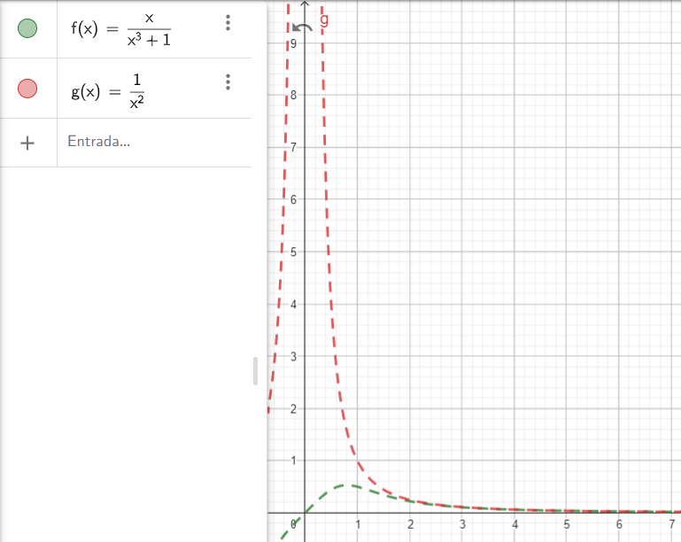

Sequências
Uma sequência é caracterizada por uma ordem lógica de números ou letras:
$$ sequência = a_1, a_2, a_3, ... , a_n $$
Cada 'ax' é chamado de termo e o número variando de 1 a 'n' é a posição do termo.
Notação
Para representar uma sequência a seguinte notação é utilizada:
an = {a1, a2, a3, ..., an}.
O an é o termo geral da sequência; é a equação que mostra como a sequência se comporta em função de n. Por exemplo:
an = { 1, 1⁄2 , 1⁄4 , 1⁄8 , ... , 1⁄2n }
Nesta sequência, cada termo é dado pela fórmula an = 1⁄2n, que representa o comportamento da sequência como um todo. Esta expressão é a nossa equação geral da sequência.
Portanto, o an é igual a 1⁄2n, assim a partir dessa lei de formação é possível determinar qualquer termo de acordo com sua posição n. Com isso, em C2 estudaremos sequência com n tendendo ao infinito, o que implica que sempre haverá um termo sucessor (an+1).
Limites:
Começaremos por limites, como estamos trabalhando com sequências infinitas principalmente com o objetivo de descobrir se ela tem um fim, tentando determinar sua convergência.
Convergência
Para continuarmos é necessário ter conhecimento prévio sobre cálculo 1, pois utilizaremos ferramentas como: Limites, derivados e integrais. A convergência é determinada calculando o limite do termo geral com n tendendo ao infinito, sendo que, caso o Lim seja um número que pertence ao numeros reais entao classificamos essa sequência como convergente. Pela definição, temos:
1- Exemplos:
a) {1⁄2n}∞n = 1 = {1 , 1⁄2 , 1⁄4 , ... , 1⁄2n}
- Termo geral (an) = 1⁄2n;
- Tome, limn->∞ an como L;
- limn->∞ 1⁄2n = 0;
Portanto, essa sequência converge converge para 0.

Note que, à medida que n aumenta, o valor de Y se aproxima cada vez mais de 0.
b) {2n⁄n+1⁄n}∞n=1 = {3, 5⁄2, 9⁄3, ...}
- Termo geral (an) = 2n⁄n+1⁄n
- Tome, limn->∞ an como L;
- limn->∞ 2n⁄n+1⁄n = ∞;
Portanto, a sequência diverge.

Note que, à medida que n aumenta, o valor de Y não converge para um ponto.
Comportamentos sequenciais
Sequência decrescente
Dada uma sequência qualquer an, caso an+1 ≤ an ∀n, então dizemos que é uma sequência decrescente.
*Sequência estritamente decrescente: Atende à mesma condição de uma sequência decrescente, exceto que, para todo n, cada termo é sempre maior que seu sucessor.
Sequência crescente
Dada uma sequência qualquer an, caso an+1 ≥ an ∀n, então dizemos que é uma sequência decrescente.
*Sequência estritamente decrescente: Atende à mesma condição de uma sequência crescente, exceto que, para todo n, cada termo é sempre menor que seu sucessor.
*OBS: Quando uma sequência pode ser classificada como crescente ou decrescente, chamamos essa sequência de monótona.
Tipos de sequências
I - an = {-1, 1, -1, 1, ...};
Analisando o comportamento dos termos, pode-se deduzir a seguinte equação:
an = {(-1)n}∞n=1
Calculando o limite chegamos que:
- lim ann->∞= ∄, como essa sequência alterna entre valores negativos e positivos o chamamos de sequência alternada.
II - an = {1 , 1⁄2 , 1⁄3 , 1⁄4};
Analisando o comportamento dos termos, pode-se deduzir a seguinte equação:
an = {1⁄n}∞n=1
Calculando o limite chegamos que:
- lim ann->∞ = 1, portanto essa sequência converge para 1.
*OBS: Essa sequência chama-se seq. harmônica, que pode ser facilmente confundida com a série harmônica, da qual não converge.
III - an = {1, 1⁄4 , 1⁄8 , 1⁄16 ,...};
Analisando o comportamento dos termos, pode-se deduzir a seguinte equação:
an = {1⁄2n}∞n=1
Calculando o limite chegamos que:
- lim ann->∞ = 0, portanto essa sequência converge para 0.
*OBS: Esta sequência é conhecida como seq. geométrica. Caso sua razão (r = a2⁄a1) seja estritamente menor que 1, ela convergirá.
Séries
A soma de termos ordenados é denominada série:
$$ séries = a_1 + a_2 + a_3 + ... + a_n $$
Notação
Para representar uma série a seguinte notação é utilizada:
$$ \sum_{i=1}^{n} a_i = a_1 + a_2 + ... + a_n $$
O sigma representa que estamos calculando a soma dos termos, que serão definidos pela equação geral ai, e em seguida listamos os termos. Vale ressaltar que, ao fazer operações com termos, normalmente calculamos em pares. Aqui não será diferente, e com isso podemos introduzir a soma parcial sn.
O Snserá uma sequência, sendo que seu termo será a soma dos pares, ou seja:
$$ s_n = (a_1), (a_1 + a_2), ((a_1 + a_2) + a_3), ..., s_n $$
Limite
Utilizando, novamente, limites, deduziremos uma lei de formação que obedeça ao comportamento dos termos de s
1- Exemplos:
$$\sum_{i=1}^{n} \frac{1}{n+1}-\frac{1}{n+2} ;$$
Calculando os primeiros termos:
$$ \sum_{i=1}^{n} = \left[\frac{1}{2} - \frac{1}{3}\right] + \left[\frac{1}{3} - \frac{1}{4}\right] + \left[\frac{1}{4} - \frac{1}{5}\right] + ... + \left[\frac{1}{n+1} - \frac{1}{n+2}\right]$$
Perceba que podemos cancelar a segunda parte da fração do termo geral com a primeira parte do seguinte termo, e vice-versa. Portanto, chegando na seguinte lei de formação:
$$ s_n = \frac{1}{2} - \frac{1}{n+2} $$
Por fim, calculando o limite:
$$ lim_{n->∞}\frac{1}{2} - \frac{1}{n+2} = \frac{1}{2}$$
Assim chegamos que a soma dos infinitos termos é 1⁄2.
*OBS: Essa série chama-se de série telescópica.
Testes de convergencia: quando termos positivos
I - Teste da divergência:
Seja Σ an com termos positivos. Se o limite de an ≠ 0 ou ∄, entao a série diverge.
Caso o limite seja igual a 0, nada pode ser determinado.
Ex.:
$$ \sum_{n=1}^{∞} \frac{2n + 1}{n-32} ⬌ lim_{n->∞}\frac{2n + 1}{n-32} = 2 ≠ 0 $$
Utilizando o teste I verificamos que o limite da sequência é diferente de zero, consequentemente sua série diverge.
Ex.:
$$ \sum_{n=1}^{∞} \frac{1}{n} \text{ ⬌ } lim_{n->∞}\frac{1}{n} = 0 $$
Utilizando o teste de convergência, verificamos que o limite da sequência converge para zero. Consequentemente, não podemos definir se a série converge ou diverge com este teste. Entretanto, essa é uma série harmônica, portanto, não convergirá.
II - Teste da integral:
Seja 'f' uma função contínua em [n,∞[ e Σ ancom termos positivos, tome an = f(n).
$$ \small \text{a)} \int_{1}^{∞}f(n) \,dn \text{ convergir ⬌} \sum{a}{n} \text{ converge;} $$
$$ \small \text{b)} \int_{1}^{∞}f(n) \,dn \text{ divergir ⬌} \sum{a}{n} \text{ diverge.} $$
*OBS: Esse teste é somente classificatório. Utilizamos a integral definida para calcular a área abaixo da função, e se conseguirmos calcular essa área, é porque a função delimita uma região fechada.
Ex.:
$$ \sum_{n=1}^{∞} \frac{1}{n^2+1} $$
Os teste sào escolhidos com base na facilidade para solução dos problemas, então vamos usar o teste I:
$$ \sum_{n=1}^{∞} \frac{1}{n^2+1} \text{ ⬌ } lim_{n->∞} \frac{1}{n^2+1} = 0 \small \text{ : Inconclusivo}$$
Apesar do primeiro teste falhar vamos verificar se trata-se de um série harmômica ou geométrica:
$$ \left[\frac{1}{n^2+1} \right]_{n=1}^{∞} = \frac{1}{2} \text{ , } \frac{1}{5} \text{ , } \frac{1}{10} \text{ , } ... \text{ , } \frac{1}{n^2+1} $$
Percebe-se que não se trata nem de uma série harmômina e nem de um geométrica, com isso vamo utilizar o teste da integral:
$$ \sum_{n=1}^{∞} \frac{1}{n^2+1} \text{ ⬌ } \int_{1}^{∞} \frac{1}{n^2+1} \, dn = \left[ arctg(n) \right]_1^t = arctg(t) - arctg(1) $$
$$ = lim_{n->∞} \left[arctg(t) - arctg(1) \right] = lim_{n->∞} \left[\frac{π}{2} - \frac{π}{4} \right] = \frac{π}{4} $$
Utilizando o teste da integral, verificamos que a série converge. Contudo não sabemos para qual ponto.
*OBS: Utilizando a integral podemos demonstrar a propriedade das p-séries, entretanto para manter a orgamização deixarei este link para descorrer sobre as p-séries.
Vamo analisar a seguinte série:
$$ \sum_{n=1}^{∞} \frac{1}{n^p} $$
Usando integral temos:
$$ \int_{0}^{∞} \frac{1}{x^p} \, dx $$
$$ \int_{0}^{∞} x^{-p} \, dx = \left. \frac{x^{-p +1}}{-p+1} \right|_{0}^{∞} $$
$$ \lim_{t \to ∞} \frac{t^{-p+1}}{-p+1} - \frac{0^{-p+1}}{-p+1} = \lim_{t \to ∞} \frac{t^{1-p}}{1-p}$$
$$ \lim_{t \to ∞} \frac{t^{1-p}}{1-p} = \begin{cases} \infty & \text{se } p > 1 \\ \frac{1}{1-p} & \text{se } p < 1 \end{cases} $$
Para p = 1 teremos uma indeterminação. Substituimos x por t para avaliarmos o limite do t tendendo ao infinito, pois como infinito não é um numero não podemos substituir no n.
III - Teste da comparação:
Sejam Σ an e Σ bn, sendo que bn é obtido separando os termos de maior grau do denominador e numerador de an, com an e bn tendo termos positivos ∀n.
$$ \small \text{a)} \sum{b}{n} \text { convergir e } a_{n} ≤ b_{n} \text{ ⬌ } \sum{a}{n} \text{ converge;} $$
$$ \small \text{b)} \sum{b}{n} \text { divergir e } a_{n} > b_{n} \text{ ⬌ } \sum{a}{n} \text{ diverge;} $$
*OBS: Qualquer outro caso é inconclusivo, utilizando esse teste.
Ex.:
$$ \sum_{n=1}^{∞} \frac{n}{n^3 + 1} $$
Novamente, utilizando o teste I, verificamos que o limite da sequência converge para zero. Resolver integrando seria muito complexo, então vamos utilizar o teste da comparação:
$$ \sum_{n=1}^{∞} a_n = \frac{n}{n^3+1} \text{ ⬌ } \sum_{n=1}^{∞} b_n = \frac{n}{n^3} = \frac{1}{n^2} $$
Percebe-se que bn é uma p-série que converge. Agora analisando os termos:
$$ \left[ \frac{n}{n^3+1} \text{ [≤] ou [>] } \frac{1}{n^2} \right] \text{ ⮕}_{n = 1} \text{ ⮕} \left[\frac{1}{2} < 1\right] \text{ ⮕}_{n = 2} \text{ ⮕} \left[\frac{2}{9} < \frac{1}{4} \right] ... $$
Como a sequência bn converge, e an é menor que bn ∀n, então a sequência an converge.
*OBS: Para respresentar os termos em um gráfico não podemos conectar os pontos.
IV - Teste da comparação no limite:
Nesse teste, utilizaremos um caminho parecido com o teste anterior, com alteração na verificação de termo a termo para verificar o limite de:
$$ \lim_{n->∞} \frac{a_n}{b_n} = L$$
$$ \small \text{a)} L > 0 \text{ e} \sum{b}{n} \text{ convergir ⬌ } \sum{a}{n} \text{ converge;} $$
$$ \small \text{b)} L = 0 \text{ e} \sum{b}{n} \text{ convergir ⬌ } \sum{a}{n} \text{ converge;} $$
$$ \small \text{c)} L : ∞ \text{ e} \sum{b}{n} \text{ divergir ⬌ } \sum{a}{n} \text{ diverge;} $$
$$ \small \text{d)} L > 0 \text{ e} \sum{b}{n} \text{ divergir ⬌ } \sum{a}{n} \text{ diverge;} $$
Ex.:
$$ \sum_{n=1}^{∞} \frac{3n + 2}{2n^3 + 5n} $$
A partir de um momento ficaremos mais acertivos quanto ao teste que será utilizado, portanto vamos aplicar o teste IV:
$$ \sum a_n = \frac{3n + 2}{2n^3 + 5n} \text{ ⬌ } \sum b_n = \frac{1}{n^2} $$
Novamente, bn é uma p-série que converge. Analisando o limite:
$$ \lim_{n->∞} \frac{ \frac{3n + 2}{2n^3 + 5n}}{\frac{1}{n^2}} \text{ ⬌ } \lim_{n->∞} \frac{(3n + 2) . n^2}{2n^3 + 5} \text{ ⬌ } \lim_{n->∞} \frac{3n^3 + 2n^2}{2n^3 + 5} =\frac{3}{2} > 0 $$
Como o limite é maior que zero, e a sequência bn converge, então a sequência an converge. *a)
Testes de convergencia: quando termos positivos e negativos
Para séries com termos negativos e positivos, utilizamos os teste de 5 a 8:
V - Teste da alternada:
Seja Σ an com termos alternados, ou seja, an = (-1)n-1, com an+1 ≤ an ∀n e o limite igual a 0 o Σ an converge.
Ex.:
$$ \sum{(-1)^n \frac{1}{n+1}} $$
Série de potencia
Agora que estamos familharizados com séries vamos trabalhar com a transformação de função em um somatório de termos infinitos
$$ f(x) = \sum_{n=0}^{∞} a_n (x-c)^n $$
Notação
Para representar uma série de potência a seguinte notação é utilizada:
$$ \sum_{n=0}^{∞} a_n(x-c)^n $$
No geral queremos determinar os valores de x em que a série converge, portanto vamos para um exemplo:
Ex.: Para quais valores de X a série converge?
$$\sum_{n=0}^{∞}n! . x^n = \sum_{n=0}^{∞} n! . (x- 0)^n$$
Primeiramente vamos verificar se a série converge e utilizando o teste da razão temos:
$$ b_n = n!. x^n \text{ ; } lim_{n \to ∞} \left|\frac{a_{n+1}}{b_n} \right|$$
$$ lim_{n \to ∞} \left| \frac{(n+1)! . x^{n+1}}{n! . x^n} \right| $$
$$ lim_{n \to ∞} (n+1) .\left| x \right| $$
$$a) converge, x = 0 $$
$$b) diverge, x \neq 0 $$
Verificamos, portanto, que somente quando x igual a zero a série convergirá.
Ex.: Para quais valores de X a série converge?
$$ \sum_{n =0}^{∞} \frac{(x-3)^n}{n} = \sum_{n =0}^{∞} \frac{1 . (x-3)^n}{n}$$
Primeiramente vamos verificar se a série converge e utilizando o teste da razão temos:
$$ b_n = \frac{(x-3)^n}{n} \text{ ; } lim_{n \to ∞} \left|\frac{(x - 3)^{n + 1}}{n + 1} . \frac{n}{(x - 3)^n} \right| $$
$$ lim_{n \to ∞} \left| \frac{(x-3) . n}{n+1} \right| = lim_{n \to ∞} \left| \frac{(x - 3)}{1+\frac{1}{n}} \right|$$
Para que a série seja convergente, o limite deve ser menor que 1, portanto:
$$ |x - 3| < 1 $$
Resolvendo a inequação chegaremos que:
$$ -1 < |x - 3| < 1 ⇒ 2 < x < 4 $$
Pode parecer que achamos os valores de x, entretanto no teste da razáo quando o limite é igual a 1 não sabemos o que afirmar. Portanto vamos substituir na série x = 2 e depois x = 4.
* x = 2
$$ \sum_{n =0}^{∞} \frac{(2-3)^n}{n} = \sum_{n =0}^{∞} \frac{(-1)^n}{n} $$
Pelo testa da série alternada convergirá.
* x = 4
$$ \sum_{n =0}^{∞} \frac{(4-3)^n}{n} = \sum_{n =0}^{∞} \frac{1}{n} \text{ : série harmônica} $$
Enfim, a série converge para x = 2 e diverge para x = 4, ficando o intervalo de convergência: 2 ≤ x < 4.
Com o intervalo podemos introduzir o conceito de Raio de convergência: é o tamanho do intervalo em relação ao centro da série.
Ex.: Para a série $$ \sum_{n=0}^{∞} \frac{(-1)^n}{n+1} . x^n = \sum_{n= 0}^{∞} \frac{(-x - 0)^n}{n + 1}$$
$$ b_n = \frac{x^n}{n+1} \text{ ; } lim_{n \to ∞} \left| \frac{x^{n+1}}{n+2} . \frac{n+1}{x^n} \right| $$
$$ lim_{n \to ∞} \left| \frac{x . (n + 1)}{n+2} \right| = \left| x \right| . lim_{n \to ∞} \frac{n + 1}{n+2} = \left| x \right| . lim_{n \to ∞} \frac{ 1 +\frac {1}{n}}{1 +\frac{2}{n}} = x$$
Sabemos que essa serie esta centrada em 0, portanto o raio de convergência é . Agora para o intervalo terá que ser avaliados as extremidades, e você chegará em:
$$ |x| < 1 ⇒ -1 < x ≤ 1 ; intervalo: (-1, 1]$$
Representações de Funções como Séries de Potências
Veremos mais tarde que essa estratégia é útil para integrar funções que não têm antiderivadas elementares, para resolver as equações diferenciais e para aproximar funções por polinômios.
Para representar uma função como uma série de potências, é necessário que a função seja analítica em um intervalo aberto em torno de um ponto. A série geométrica é um exemplo fundamental de série de potências, pois sua soma converge para a função $$ f(x) = \frac{1}{1 - x} $$ quando ∣x∣<1. Essa relação nos permite expandir funções mais complexas em séries de potências, desde que elas compartilhem propriedades de convergência semelhantes.
$$ \sum_{n=0}^{∞} x^n = \frac{1}{1 - x}$$
Vamos solucionar um exemplo, para entendermos:
Ex.: Represente a função f(x) como uma série de potência.
$$ f(x) = \frac{1}{5 + x} $$
Vamos tentar nos aproximar da função da soma parcial de uma série geométrica:
$$ f(x) = \frac{1}{5(1 + \frac{x}{5})} = \frac{1}{5} . \frac{1}{1 - (-\frac{x}{5})}$$
$$ k = (-\frac{x}{5}) ⇒ f(x) = \frac{1}{5} . \frac{1}{1 -k}$$
$$ f(x) = \frac{1}{5} . \sum_{n=0}^{∞} k^n = \frac{1}{5} . \sum_{n=0}^{∞} \left(-\frac{x}{5} \right)^n$$
$$ f(x) = \sum_{n=0}^{∞} (-1)^n . \frac{x^n}{5^{n+1}}$$
Perceba que fizemos uma substituição para que a função se aproximasse de uma série geométrica, e assim conseguimos representar a função f(x) como uma série de potência.
Integração e derivação de séries de potências
Sabemos que, sob certas condições, a integral da soma é igual à soma das integrais, e o mesmo vale para a derivação. Isso nos leva a perguntar: será que podemos obter novas séries de potências integrando ou derivando séries conhecidas? A resposta é sim! Por exemplo, voltando na função base para as repesentações:
$$ \int \sum_{n=0}^{∞} x^n = \int \frac{1}{1 - x}$$
$$ \sum_{n=0}^{∞} \frac{x^{n+1}}{n+1} = -ln(1 - x)$$
$$ E $$
$$ \frac{d}{dx} \sum_{n=0}^{∞} x^n = \frac{d}{dx} \frac{1}{1 - x}$$
$$ \sum_{n=0}^{∞} n . x^{n-1} = \frac{1}{(1 - x)^2}$$
Pelo Teorema de Derivação e Integração Termo a Termo de Séries de Potências, podemos derivar ou integrar termo a termo uma série de potências dentro de seu raio de convergência. Isso nos permite utilizar técnicas aprendidas em Cálculo I, como derivadas e integrais de polinômios, para manipular séries de potências.
*OBS: A integração ou derivação pode mudar o intervalo de convergência da série nas extremidades, portanto é importante verificar se a série resultante converge no mesmo intervalo que a série original.
Série de Taylor e Mclauren
Vimos que podemos representar funções como séries de potências através da soma parcial de uma série geométrica, que é um caso particular de série de potências. No entanto, nem sempre é possível ou prático representar uma função diretamente a partir de uma série geométrica. Para esses casos, utilizamos a série de Taylor
$$ f(x) = \sum_{n=0}^{∞} \frac{f^{(n)}(a)}{n!} . (x - a)^n $$
Para o caso de a = 0, temos a série de Maclaurin:
$$ f(x) = \sum_{n=0}^{∞} \frac{f^{(n)}(0)}{n!} . x^n $$
Notação
Para representar uma série de Taylor a seguinte notação é utilizada:
$$ * f^{(n)}(a) \text{ : é a derivada de ordem n-ésima da função f(x) avaliada no ponto a; }$$ $$ * (x - a)^n : \text{ é a potência da série;} $$
Ex.:
Vamos expandir a função f(x) = sin(x) em torno de x = 0 (série de Maclaurin, que é um caso especial da série de Taylor com a = 0).
Já que estamos trabalhando com uma série que depende da derivada das função, vamo derivar:
$$ f(0) = sin(0) = 0 \text{ ⇒ } f'(0) = cos(0) = 1 \text{ ⇒ } $$ $$ f''(0) = -sin(0) = 0 \text{ ⇒ } f'''(0) = -cos(0) -1 \text{ ⇒ } f''''(0) = sin(0) = 0 $$ $$ \text { ⇒ } ...$$
Substituindo na série de Maclaurin:
$$ sin(x) = \sum^∞_{n = 0} \frac{f^{(n)}(0)}{n!} . x^n = f(0) + f'(0) . x + \frac{f''(0)}{2!} . x^2 + \frac{f'''(0)}{3!} . x^3 + ...$$ $$ sin(x) = 0 + 1 . x + 0 + \frac{-1}{3!} . x^3 + 0 + \frac{1}{5!} . x^5 + ...$$
Simplificando a série de Maclaurin, obtemos:
$$ sin(x) = x - \frac{x^3}{3!} + \frac{x^5}{5!} - \frac{x^7}{7!} + ...$$
Enfim fechando a série ficamos que:
$$ sin(x) = \sum^∞_{n = 0} (-1)^n \frac{x^{2n + 1}}{(2n + 1)!} $$
Equações Diferenciais Ordinárias (EDO's)
EDO's são equações que envolve uma função e sua derivadas, por exemplo:
$$ \frac{d^2}{dx^2} y + 3y = p(x) $$
Classificação
As EDO's podem ser classificadas em:
Ordem
Em uma EDO's o nível da derivada define sua ordem:
$$ I) \text{ } x^3\frac{d^2y}{d^2x} + y = 0 ⇒ Ordem : 2 $$ $$ II) \text{ } x^2y' + \frac{x.y}{2} = 0 ⇒ Ordem : 1 $$ $$ III) \text{ } \frac{34d^ny}{d^nx} - x^4\frac{dy}{dx} = 0 ⇒ Ordem : n $$
Linearidade
Se a função e suas derivadas são lineares, a EDO é linear caso contrário será não linear.
$$ I) \text{ } \frac{d^2y}{dx^2} + 3y = 0 ⇒ Linear $$ $$ II) \text{ } \frac{d^2y}{dx^2} + 3y^2 = 0 ⇒ Não-linear $$ $$ III) \text{ } \frac{d^2y}{dx^2} + y . \frac{dy}{dx}= 89 ⇒ Não-Linear $$
Perceba que na EDO II o y está ao quadrado e a III o y é o coeficiente.
Homogeniedade
Uma Equação Diferencial Ordinária (EDO) é considerada homogênea quando todos os seus termos são funções homogêneas do mesmo grau em relação à função incógnita e suas derivadas. Isso significa que a equação pode ser escrita de forma que todos os termos envolvam a função \( y(x) \) e suas derivadas de maneira proporcional.
-
Forma Geral:
Uma EDO de primeira ordem homogênea pode ser expressa como: $$ \frac{dy}{dx} = f\left(\frac{y}{x}\right) $$ Isso indica que a função \( f \) depende apenas da razão \( \frac{y}{x} \). -
Verificação:
Uma função \( f(x, y) \) é dita homogênea de grau \( n \) se: $$ f(tx, ty) = t^n f(x, y) $$ Para uma EDO homogênea, a função \( f(x, y) \) deve ser homogênea de grau zero, ou seja: $$ f(tx, ty) = f(x, y) $$ - \( N(t) \) é a quantidade da substância no tempo \( t \).
- \( k \) é uma constante positiva que representa a taxa de decaimento.
- \( y = y(x) \) é a função incógnita.
- \( y' = \frac{dy}{dx} \) e \( y'' = \frac{d^2y}{dx^2} \) são as derivadas de primeira e segunda ordem, respectivamente.
- \( a \), \( b \) e \( c \) são constantes reais, com \( a \neq 0 \).
- Reais e distintas (\( \Delta > 0 \)).
- Reais e iguais (\( \Delta = 0 \)).
- Complexas conjugadas (\( \Delta < 0 \)).
- Raízes Reais e Distintas (\( r_1 \neq r_2 \)): $$ y(x) = C_1 e^{r_1 x} + C_2 e^{r_2 x} $$ Onde \( C_1 \) e \( C_2 \) são constantes arbitrárias.
- Raízes Reais e Iguais (\( r_1 = r_2 = r \)): $$ y(x) = (C_1 + C_2 x) e^{r x} $$
- Raízes Complexas Conjugadas (\( r = \alpha \pm i\beta \)): $$ y(x) = e^{\alpha x} \left( C_1 \cos(\beta x) + C_2 \sin(\beta x) \right) $$ Onde \( \alpha \) e \( \beta \) são as partes real e imaginária das raízes, respectivamente.
- Equação característica: $$ r^2 - 3r + 2 = 0 $$
- Raízes: $$ r = 1 \quad \text{e} \quad r = 2 $$
- Solução geral: $$ y(x) = C_1 e^{x} + C_2 e^{2x} $$
- Equação característica: $$ r^2 - 4r + 4 = 0 $$
- Raízes: $$ r = 2 \quad \text{(dupla)} $$
- Solução geral: $$ y(x) = (C_1 + C_2 x) e^{2x} $$
- Equação característica: $$ r^2 + 4r + 13 = 0 $$
- Raízes: $$ r = -2 \pm 3i $$
- Solução geral: $$ y(x) = e^{-2x} \left( C_1 \cos(3x) + C_2 \sin(3x) \right) $$
- Solução da Equação Homogênea: Resolva a equação homogênea associada: $$ y'' + a y' + b y = 0, $$ obtendo a solução geral \( y_h(x) \).
-
Solução Particular da Equação Não Homogênea:
Encontre uma solução particular \( y_p(x) \) usando métodos como:
- Coeficientes a Determinar: Para \( g(x) \) polinomial, exponencial, seno ou cosseno.
- Variação dos Parâmetros: Para \( g(x) \) mais geral.
- Solução Geral: A solução geral é a soma da solução homogênea e da solução particular: $$ y(x) = y_h(x) + y_p(x). $$
- Substitua \( y(x) = v(x) y_1(x) \) na EDO.
- Resolva a nova EDO para \( v(x) \).
- A solução geral é: $$ y(x) = C_1 y_1(x) + C_2 v(x) y_1(x). $$
- \( r \) é um número chamado expoente característico ou índice.
- \( a_n \) são coeficientes a serem determinados.
- \( x^r \) é o fator que permite lidar com singularidades.
- \( p_0 \) é o coeficiente de \( x^{-1} \) na expansão de \( xP(x) \).
- \( q_0 \) é o coeficiente de \( x^{-2} \) na expansão de \( x^2Q(x) \).
-
Raízes distintas que não diferem por um inteiro:
- Neste caso, duas soluções linearmente independentes podem ser obtidas diretamente do método de Frobenius, uma para cada valor de \( r \).
-
Raízes iguais:
- Quando \( r_1 = r_2 \), uma solução é obtida diretamente, e a segunda solução envolve um termo logarítmico.
-
Raízes que diferem por um inteiro:
- Quando \( r_1 - r_2 \) é um inteiro, uma solução é obtida diretamente, e a segunda solução pode envolver um termo logarítmico ou uma manipulação adicional da série.
- A equação indicial \( r^2 = 0 \).
- Uma relação de recorrência para os coeficientes.
- A solução geral na forma de série.
- \( f(t) \) é a função no domínio do tempo.
- \( F(s) \) é a função transformada no domínio de Laplace.
- \( s = \sigma + j\omega \) é uma variável complexa (\( \sigma \) e \( \omega \) são reais, e \( j \) é a unidade imaginária).
- Linearidade: $$ \mathcal{L}\{a f(t) + b g(t)\} = a F(s) + b G(s) $$ Onde \( a \) e \( b \) são constantes.
- Deslocamento no tempo: $$ \mathcal{L}\{f(t - a) u(t - a)\} = e^{-as} F(s) $$ Onde \( u(t - a) \) é a função degrau unitário.
- Deslocamento na frequência: $$ \mathcal{L}\{e^{at} f(t)\} = F(s - a) $$
- Derivação no tempo: $$ \mathcal{L}\{f'(t)\} = s F(s) - f(0) $$ Para derivadas de ordem superior: $$ \mathcal{L}\{f''(t)\} = s^2 F(s) - s f(0) - f'(0) $$
- Integração no tempo: $$ \mathcal{L}\left\{\int_0^t f(\tau) \, d\tau\right\} = \frac{F(s)}{s} $$
- Função constante (\( f(t) = 1 \)): $$ \mathcal{L}\{1\} = \frac{1}{s} $$
- Função exponencial (\( f(t) = e^{at} \)): $$ \mathcal{L}\{e^{at}\} = \frac{1}{s - a} $$
- Função seno (\( f(t) = \sin(\omega t) \)): $$ \mathcal{L}\{\sin(\omega t)\} = \frac{\omega}{s^2 + \omega^2} $$
- Função cosseno (\( f(t) = \cos(\omega t) \)): $$ \mathcal{L}\{\cos(\omega t)\} = \frac{s}{s^2 + \omega^2} $$
- Função degrau unitário (\( f(t) = u(t) \)): $$ \mathcal{L}\{u(t)\} = \frac{1}{s} $$
- Resolução de equações diferenciais lineares.
- Análise de sistemas dinâmicos em engenharia.
- Estudo de circuitos elétricos.
- Processamento de sinais e controle de sistemas.
- \( x_1(t), x_2(t), \ldots, x_n(t) \) são as funções desconhecidas.
- \( a_{ij}(t) \) são coeficientes que podem depender de \( t \).
- \( g_i(t) \) são termos não homogêneos.
- \( \mathbf{x}(t) = \begin{bmatrix} x_1(t) \\ x_2(t) \\ \vdots \\ x_n(t) \end{bmatrix} \) é o vetor de funções desconhecidas.
- \( \mathbf{A}(t) = \begin{bmatrix} a_{11}(t) & a_{12}(t) & \cdots & a_{1n}(t) \\ a_{21}(t) & a_{22}(t) & \cdots & a_{2n}(t) \\ \vdots & \vdots & \ddots & \vdots \\ a_{n1}(t) & a_{n2}(t) & \cdots & a_{nn}(t) \end{bmatrix} \) é a matriz de coeficientes.
- \( \mathbf{g}(t) = \begin{bmatrix} g_1(t) \\ g_2(t) \\ \vdots \\ g_n(t) \end{bmatrix} \) é o vetor de termos não homogêneos.
- Autovalores: \( \lambda_1 = 1 \), \( \lambda_2 = 3 \).
- Autovetores correspondentes: \( \mathbf{v}_1 = \begin{bmatrix} 1 \\ -1 \end{bmatrix} \), \( \mathbf{v}_2 = \begin{bmatrix} 1 \\ 1 \end{bmatrix} \).
- \( \mathbf{x}_h(t) \) é a solução geral do sistema homogêneo associado.
- \( \mathbf{x}_p(t) \) é uma solução particular do sistema não homogêneo.
- Autovalores e Autovetores: Usado para sistemas homogêneos com coeficientes constantes.
- Variação de Parâmetros: Usado para sistemas não homogêneos.
- Transformada de Laplace: Útil para sistemas com condições iniciais.
Considere a seguinte EDO: $$ f(x, y) = \frac{x^2 + y^2}{xy} $$ Substituindo \( x \) por \( tx \) e \( y \) por \( ty \): $$ f(tx, ty) = \frac{(tx)^2 + (ty)^2}{(tx)(ty)} = \frac{t^2(x^2 + y^2)}{t^2xy} = \frac{x^2 + y^2}{xy} = f(x, y) $$ Como \( f(tx, ty) = f(x, y) \), a função é homogênea de grau zero.
Solução
Para, neste primeiro momento, solucionar uma EDO precisamos verifcar se a expressão irá satifazer a EDO.
Ex.:
$$ \left\{ \begin{array}{l} \frac{dy}{dx} + 2y = 4x \\ y(x) = 2x - 1 + C.e^{-2x} \end{array} \right. $$
Derivando para substituir na EDO:
$$ y'(x) = 2 -2Ce^{-2x} $$
Substituindo:
$$ 2 - 2Ce^{-2x} + 2(2x -1 + Ce^{-2x}) = 4x ⇒ 2 - 2Ce^{-2x} + 4x -2 + 2Ce^{-2x} = 4x$$
$$ \cancel{2} - 2\cancel{Ce^{-2x}} + 4x \cancel{ -2 } + 2\cancel{Ce^{-2x}} = 4x $$ $$ 4x = 4x ⇒ x = x$$
Portanto, y(x) = 2x -1 + C.e-2x é solução
Problema de Valor Inicial (PVI)
Séra solução particular da EDO sendo dado um valor da função e/ou suas derivadas em um ponto inicial.
Ex.: Ainda utilizando o exemplo anterior
$$ \left\{ \begin{array}{l} y(x) = 2x - 1 + C.e^{-2x} \\ y(0) = 1 \end{array} \right. $$
Substituindo:
$$ 1 = 2.0 - 1 + C.e^0 ⇒ 1 = -1 + C $$ $$ C = 2 $$
Então, $$ y(0) = 2x - 1 + 2e^{-2x} $$
Técnicas de solução:
EDO's separáveis
Podemos carcterizar uma EDO como separável se for possivel reescrever ela como: $$ \frac{d^ny}{d^nx} = f(x) . g(y) $$ assim podendo isolar as variáveis e possibilitando suas integrações: $$ \frac{1}{g(y)} d^ny = f(x) . d^nx $$
Resolva a integração e isole o y se possível para encontrar a solução da EDO.
Ex.:
$$ \frac{dN}{dt} = -kN, $$
onde:
Passo a Passo para Resolver:
1. Separe as variáveis:
$$ \frac{1}{N} \, dN = -k \, dt. $$
2. Integre ambos os lados:
$$ \int \frac{1}{N} \, dN = \int -k \, dt. $$
As integrais são:
$$ \ln|N| = -kt + C, $$
3. Isolando \( N \):
$$ |N| = e^{-kt + C} = e^C \cdot e^{-kt}. $$
$$ N(t) = e^C \cdot e^{-kt}. $$
4. Solução final:
$$ N(t) = C_1\cdot e^{-kt}. $$
EDO's não homogêneas (fator integrante)
Nesse tipo de EDO há termos indepedentes, tendo como forma geral em uma EDO linear de primeira ordem:
$$ \frac{dy}{dx} + p(x)y = q(x) $$
Considere a seguinte EDO linear de primeira ordem:
$$ \frac{dy}{dx} + 2xy = x. $$
Passo a Passo para Resolver:
1. Identifique \( p(x) \) e \( q(x) \):
$$ p(x) = 2x, \quad q(x) = x. $$
2. Calcule o fator integrante \( \mu(x) \):
$$ \mu(x) = e^{\int p(x) \, dx}. $$ Substituindo \( p(x) = 2x \): $$ \mu(x) = e^{\int 2x \, dx} = e^{x^2}. $$
3. Multiplique a EDO pelo fator integrante:
$$ e^{x^2} \frac{dy}{dx} + 2x e^{x^2} y = x e^{x^2}. $$ Observe que o lado esquerdo é a derivada do produto \( y \cdot e^{x^2} \): $$ \frac{d}{dx} \left( y e^{x^2} \right) = x e^{x^2}. $$
4. Integre ambos os lados:
$$ y e^{x^2} = \int x e^{x^2} \, dx. $$ Para resolver a integral do lado direito, use a substituição \( u = x^2 \), \( du = 2x \, dx \): $$ \int x e^{x^2} \, dx = \frac{1}{2} \int e^u \, du = \frac{1}{2} e^u + C = \frac{1}{2} e^{x^2} + C. $$
5. Resolva para \( y \):
Multiplique ambos os lados por \( e^{-x^2} \): $$ y = \frac{1}{2} e^{x^2} \cdot e^{-x^2} + C e^{-x^2}. $$ Simplifique: $$ y = \frac{1}{2} + C e^{-x^2}. $$
6. Solução geral:
$$ y(x) = \frac{1}{2} + C e^{-x^2}. $$
EDO's exata
Uma EDO exata é caracterizada pelo formato:
$$ M(x, y) \, dx + N(x, y) \, dy = 0. $$
Para que a EDO seja exata, é necessário verificar se a derivada parcial de \( M(x, y) \) em relação a \( y \) é igual à derivada parcial de \( N(x, y) \) em relação a \( x \):
$$ \frac{\partial M}{\partial y} = \frac{\partial N}{\partial x}. $$
Se essa condição for satisfeita, então existe uma função \( \psi(x, y) \) tal que: \[ d\psi = M \, dx + N \, dy, \] e a solução geral da EDO é dada implicitamente por \( \psi(x, y) = C \), onde \( C \) é uma constante.
Considere a seguinte EDO:
$$ (2xy + 3y^2) \, dx + (x^2 + 6xy) \, dy = 0. $$
Passo a Passo para Resolver:
1. Verifique a condição de exatidão:
Identifique \( M(x, y) = 2xy + 3y^2 \) e \( N(x, y) = x^2 + 6xy \). Calcule as derivadas parciais: $$ \frac{\partial M}{\partial y} = \frac{\partial}{\partial y}(2xy + 3y^2) = 2x + 6y, $$ $$ \frac{\partial N}{\partial x} = \frac{\partial}{\partial x}(x^2 + 6xy) = 2x + 6y. $$ Como \( \frac{\partial M}{\partial y} = \frac{\partial N}{\partial x} \), a EDO é exata.
2. Encontre a função \( \psi(x, y) \):
- Integre \( M(x, y) \) em relação a \( x \): $$ \psi(x, y) = \int (2xy + 3y^2) \, dx = x^2y + 3xy^2 + h(y), $$ onde \( h(y) \) é uma função de \( y \) que surge como constante de integração.
- Derive \( \psi(x, y) \) em relação a \( y \) , iguale a \( N(x, y) \) e isole h'(y): $$ \frac{\partial \psi}{\partial y} = x^2 + 6xy + h'(y) $$ $$ x^2 + 6xy + h'(y) = x^2 + 6xy. $$ $$ \cancel{x^2 + 6xy }+ h'(y) = \cancel{x^2 + 6xy}. $$ Portanto, \( h'(y) = 0 \), o que, integrando, implica \( h(y) = C \) (constante).
3. Solução geral:
A função \( \psi(x, y) \) é: $$ \psi(x, y) = x^2y + 3xy^2 + C. $$ A solução geral da EDO é dada implicitamente por: $$ x^2y + 3xy^2 = C. $$
EDO's Não-exata
Quando uma EDO não é exata, ainda podemos tentar transformá-la em uma EDO exata usando um fator integrante. Um fator integrante é uma função μ(x,y) que, quando multiplicada pela EDO, a torna exata. Portanto:
$$ \frac{\partial μM}{\partial y} = \frac{\partial μN}{\partial x}. $$
O fator integrante será definido por:
Fator Integrante Dependente de \( x \):
Se a expressão: $$ \frac{\frac{\partial M}{\partial y} - \frac{\partial N}{\partial x}}{N}, $$ depende apenas de \( x \), então o fator integrante é: $$ \mu(x) = e^{\int \frac{\frac{\partial M}{\partial y} - \frac{\partial N}{\partial x}}{N} \, dx}. $$
Fator Integrante Dependente de \( y \):
Se a expressão: $$ \frac{\frac{\partial N}{\partial x} - \frac{\partial M}{\partial y}}{M}, $$ depende apenas de \( y \), então o fator integrante é: $$ \mu(y) = e^{\int \frac{\frac{\partial N}{\partial x} - \frac{\partial M}{\partial y}}{M} \, dy}. $$
Considere a seguinte EDO:
$$ (3x^2 + y) \, dx + (x^2y - x) \, dy = 0. $$Passo a Passo para Resolver:
1. Verifique se a EDO é exata:
Identifique \( M(x, y) = 3x^2 + y \) e \( N(x, y) = x^2y - x \). Calcule as derivadas parciais: $$ \frac{\partial M}{\partial y} = 1, $$ $$ \frac{\partial N}{\partial x} = 2xy - 1. $$ Como \( \frac{\partial M}{\partial y} \neq \frac{\partial N}{\partial x} \), a EDO **não é exata**.
2. Encontre o fator integrante:
- Calcule a expressão: $$ \frac{\frac{\partial M}{\partial y} - \frac{\partial N}{\partial x}}{N} = \frac{1 - (2xy - 1)}{x^2y - x} = \frac{2 - 2xy}{x^2y - x}. $$ Simplifique: $$ \frac{2 - 2xy}{x^2y - x} = \frac{2(1 - xy)}{x(xy - 1)} = -\frac{2}{x}. $$ Agora, a expressão depende apenas de \( x \). Portanto, o fator integrante é: $$ \mu(x) = e^{\int -\frac{2}{x} \, dx} = e^{-2 \ln|x|} = \frac{1}{x^2}. $$
3. Multiplique a EDO pelo fator integrante:
Multiplicando ambos os lados da EDO por \( \mu(x) = \frac{1}{x^2} \): $$ \frac{3x^2 + y}{x^2} \, dx + \frac{x^2y - x}{x^2} \, dy = 0. $$ Simplifique: $$ \left(3 + \frac{y}{x^2}\right) \, dx + \left(y - \frac{1}{x}\right) \, dy = 0. $$
4. Verifique se a nova EDO é exata:
Identifique \( M'(x, y) = 3 + \frac{y}{x^2} \) e \( N'(x, y) = y - \frac{1}{x} \). Calcule as derivadas parciais: $$ \frac{\partial M'}{\partial y} = \frac{1}{x^2}, $$ $$ \frac{\partial N'}{\partial x} = \frac{1}{x^2}. $$ Como \( \frac{\partial M'}{\partial y} = \frac{\partial N'}{\partial x} \), a nova EDO é exata.
5. Resolva a EDO exata:
- Integre \( M'(x, y) \) em relação a \( x \): $$ \psi(x, y) = \int \left(3 + \frac{y}{x^2}\right) \, dx = 3x - \frac{y}{x} + h(y). $$ - Derive \( \psi(x, y) \) em relação a \( y \) e iguale a \( N'(x, y) \): $$ \frac{\partial \psi}{\partial y} = -\frac{1}{x} + h'(y) = y - \frac{1}{x}. $$ Portanto, \( h'(y) = y \), o que implica \( h(y) = \frac{y^2}{2} + C \).
6. Solução geral:
A função \( \psi(x, y) \) é: $$ \psi(x, y) = 3x - \frac{y}{x} + \frac{y^2}{2} + C. $$ A solução geral da EDO é dada implicitamente por:
$$ (3x^2 + y) \, dx + (x^2y - x) \, dy = 0. $$Equações Diferênciais de Segunda Ordem
As Equações Diferenciais Ordinárias (EDOs) de segunda ordem são equações que envolvem a segunda derivada de uma função desconhecida y(x).
EDOs Lineares Homogêneas com Coeficientes Constantes
1. Forma Geral
Uma EDO linear homogênea de segunda ordem com coeficientes constantes tem a forma: $$ a y'' + b y' + c y = 0 $$ Onde:
2. Método de Solução
Para resolver essa EDO, seguimos os seguintes passos:
Passo 1: Equação Característica
Assumimos uma solução da forma exponencial: $$ y = e^{rx} $$ Onde \( r \) é uma constante a ser determinada.
Substituindo \( y = e^{rx} \) na EDO, obtemos: $$ a r^2 e^{rx} + b r e^{rx} + c e^{rx} = 0 $$ Como \( e^{rx} \neq 0 \), podemos dividir toda a equação por \( e^{rx} \), resultando na equação característica: $$ a r^2 + b r + c = 0 $$
Passo 2: Resolver a Equação Característica
A equação característica é uma equação quadrática em \( r \). Suas raízes são dadas por: $$ r = \frac{-b \pm \sqrt{b^2 - 4ac}}{2a} $$ Dependendo do discriminante \( \Delta = b^2 - 4ac \), as raízes podem ser:
Passo 3: Solução Geral
A solução geral da EDO depende da natureza das raízes da equação característica:
3. Exemplos
Exemplo 1: Raízes Reais e Distintas
Considere a EDO: $$ y'' - 3y' + 2y = 0 $$
Exemplo 2: Raízes Reais e Iguais
Considere a EDO: $$ y'' - 4y' + 4y = 0 $$
Exemplo 3: Raízes Complexas Conjugadas
Considere a EDO: $$ y'' + 4y' + 13y = 0 $$
EDOs Lineares Não Homogêneas com Coeficientes Constantes
Aplica-se a EDOs da forma: $$ y'' + a y' + b y = g(x). $$
Passo a Passo:
Redução de Ordem
Aplica-se a EDOs lineares de segunda ordem quando uma solução \( y_1(x) \) é conhecida.
Passo a Passo:
Método das Séries de Potências: Método de Frobenius e Equação Indicial
O método das séries de potências, especificamente o Método de Frobenius, é uma técnica utilizada para resolver equações diferenciais lineares de segunda ordem quando o método padrão de séries de potências não é suficiente. Esse método é útil quando o ponto em torno do qual a solução é expandida (geralmente \( x = 0 \)) é um ponto singular regular da equação diferencial.
Contexto Geral
Retornando na forma geral das EDO's de segunda ordem: $$ y'' + P(x)y' + Q(x)y = 0 $$
Se \( x = 0 \) é um ponto singular regular, então \( xP(x) \) e \( x^2Q(x) \) são analíticas em \( x = 0 \), ou seja, podem ser expressas como séries de potências convergentes em torno de \( x = 0 \).
Método de Frobenius
O método de Frobenius busca soluções na forma de uma série de potências generalizada: $$ y(x) = x^r \sum_{n=0}^\infty a_n x^n = \sum_{n=0}^\infty a_n x^{n+r} $$ Onde:
Equação Indicial
Ao substituir a série de potências na equação diferencial, obtemos uma relação de recorrência para os coeficientes \( a_n \). No entanto, antes de determinar os coeficientes, é necessário encontrar o valor de \( r \). Isso é feito através da equação indicial, que é uma equação algébrica obtida igualando o coeficiente do termo de menor potência (geralmente \( x^{r-2} \)) a zero.
A equação indicial é dada por: $$ r(r-1) + p_0 r + q_0 = 0 $$ Onde:
Casos Possíveis
Dependendo das raízes da equação indicial, temos três casos principais:
Exemplo
Vamos resolver a seguinte equação diferencial usando o método de Frobenius:
$$ x y'' + y' + y = 0 $$Passo 1: Supondo a Solução na Forma de Frobenius
Assumimos que a solução tem a forma:
$$ y(x) = \sum_{n=0}^{\infty} a_n x^{n+r} $$Derivamos essa série:
$$ y'(x) = \sum_{n=0}^{\infty} a_n (n+r) x^{n+r-1} $$ $$ y''(x) = \sum_{n=0}^{\infty} a_n (n+r)(n+r-1) x^{n+r-2} $$Passo 2: Substituindo na Equação Diferencial
Substituímos \( y(x) \), \( y'(x) \) e \( y''(x) \) na equação diferencial:
$$ x \sum_{n=0}^{\infty} a_n (n+r)(n+r-1) x^{n+r-2} + \sum_{n=0}^{\infty} a_n (n+r) x^{n+r-1} + \sum_{n=0}^{\infty} a_n x^{n+r} = 0 $$Ajustando os expoentes:
$$ \sum_{n=0}^{\infty} a_n (n+r)(n+r-1) x^{n+r-1} + \sum_{n=0}^{\infty} a_n (n+r) x^{n+r-1} + \sum_{n=0}^{\infty} a_n x^{n+r} = 0 $$Agrupando:
$$ \sum_{n=0}^{\infty} \left[ a_n (n+r)(n+r-1) + a_n (n+r) + a_n x \right] x^{n+r-1} = 0 $$Passo 3: Encontrando a Equação Indicial
A equação indicial vem dos termos de menor potência:
$$ a_0 \left[ r(r-1) + r \right] = 0 $$ $$ r(r-1) + r = 0 $$ $$ r^2 = 0 $$Portanto, a solução tem uma raiz dupla:
$$ r = 0 $$Passo 4: Encontrando a Relação de Recorrência
A relação entre os coeficientes vem da equação:
$$ a_n (n+r)(n+r-1) + a_n (n+r) + a_n = 0 $$Substituindo \( r = 0 \):
$$ a_n \left[ n(n-1) + n + 1 \right] = 0 $$ $$ a_n (n^2 + 1) = 0 $$Assim, obtemos a relação de recorrência:
$$ a_n = -\frac{a_{n-1}}{n^2+1} $$Passo 5: Construindo a Solução
Escolhendo \( a_0 = 1 \), calculamos os primeiros termos:
$$ a_1 = -\frac{1}{1^2 + 1} = -\frac{1}{2} $$ $$ a_2 = -\frac{a_1}{2^2 + 1} = -\frac{-1/2}{4+1} = \frac{1}{10} $$ $$ a_3 = -\frac{a_2}{3^2 + 1} = -\frac{1/10}{9+1} = -\frac{1}{100} $$A solução geral é então:
$$ y(x) = a_0 \sum_{n=0}^{\infty} \frac{(-1)^n}{(n^2+1)} x^n $$Esse foi um exemplo simples de aplicação do método de Frobenius, onde encontramos:
Transformada de Laplace
A Transformada de Laplace é uma técnica matemática usada para transformar funções de uma variável real (geralmente o tempo \( t \)) em funções de uma variável complexa \( s \). Essa transformação é amplamente utilizada para resolver equações diferenciais lineares, analisar sistemas dinâmicos e estudar sinais e sistemas em engenharia e física.
Definição
A Transformada de Laplace de uma função \( f(t) \), definida para \( t \geq 0 \), é dada por: $$ F(s) = \mathcal{L}\{f(t)\} = \int_0^\infty f(t) e^{-st} \, dt $$ Onde:
Propriedades da Transformada de Laplace
A Transformada de Laplace possui várias propriedades úteis que facilitam sua aplicação. Algumas das principais são:
Transformadas de Laplace de Funções Comuns
Algumas transformadas de Laplace de funções comuns são:
Transformada Inversa de Laplace
A Transformada Inversa de Laplace é usada para recuperar a função original \( f(t) \) a partir de sua transformada \( F(s) \). Ela é dada por: $$ f(t) = \mathcal{L}^{-1}\{F(s)\} = \frac{1}{2\pi j} \int_{\sigma - j\infty}^{\sigma + j\infty} F(s) e^{st} \, ds $$ Na prática, a transformada inversa é calculada usando tabelas de transformadas ou técnicas de expansão em frações parciais.
Aplicações
A Transformada de Laplace é amplamente utilizada em:
Exemplo: Resolução de uma Equação Diferencial
Considere a equação diferencial: $$ y''(t) + 3y'(t) + 2y(t) = 0 $$ Com condições iniciais \( y(0) = 1 \) e \( y'(0) = 0 \).
Aplicando a Transformada de Laplace em ambos os lados, obtemos: $$ s^2 Y(s) - s y(0) - y'(0) + 3(s Y(s) - y(0)) + 2 Y(s) = 0 $$ Substituindo as condições iniciais: $$ s^2 Y(s) - s + 3s Y(s) - 3 + 2 Y(s) = 0 $$ Simplificando: $$ Y(s) = \frac{s + 3}{s^2 + 3s + 2} = \frac{s + 3}{(s + 1)(s + 2)} $$ Usando frações parciais e a transformada inversa, obtemos a solução no domínio do tempo: $$ \frac{s + 3}{(s + 1)(s + 2)} = \frac{A}{s + 1} + \frac{B}{s + 2} ⇒ s + 3 = A(s + 2) + B(s + 1) $$ $$ ⇒ s + 3 = As + 2A + Bs + B $$ $$ ⇒ s + 3 = (A + B)s + 2A + B $$ Igualando os coeficientes: $$ \begin{cases} A + B = 1 \\ 2A + B = 3 \end{cases} $$ $$ A = 2 \text{ ; } B = -1 $$ Logo, $$ Y(s) = \frac{2}{s + 1} - \frac{1}{s + 2} $$
Passo 4: Aplicar a Transformada Inversa
Aplicando a Transformada Inversa de Laplace a cada termo: $$ y(t) = \mathcal{L}^{-1}\left\{\frac{2}{s + 1}\right\} - \mathcal{L}^{-1}\left\{\frac{1}{s + 2}\right\} $$ Usando a tabela de transformadas: $$ y(t) = 2e^{-t} - e^{-2t} $$
Sistemas Lineares de Equações Diferenciais Ordinárias de 1ª Ordem
Introdução
Um sistema linear de equações diferenciais ordinárias de 1ª ordem consiste em um conjunto de equações diferenciais lineares que envolvem funções desconhecidas e suas derivadas de primeira ordem.
Um sistema geral de \( n \) equações diferenciais lineares de 1ª ordem pode ser escrito na forma: $$ \begin{cases} \frac{dx_1}{dt} = a_{11}(t)x_1 + a_{12}(t)x_2 + \cdots + a_{1n}(t)x_n + g_1(t) \\ \frac{dx_2}{dt} = a_{21}(t)x_1 + a_{22}(t)x_2 + \cdots + a_{2n}(t)x_n + g_2(t) \\ \vdots \\ \frac{dx_n}{dt} = a_{n1}(t)x_1 + a_{n2}(t)x_2 + \cdots + a_{nn}(t)x_n + g_n(t) \end{cases} $$ Onde:
Forma Matricial
O sistema pode ser escrito de forma compacta usando notação matricial: $$ \frac{d\mathbf{x}}{dt} = \mathbf{A}(t)\mathbf{x} + \mathbf{g}(t) $$ Onde:
Sistemas Homogêneos
Um sistema é chamado de homogêneo se \( \mathbf{g}(t) = \mathbf{0} \). Nesse caso, o sistema se reduz a: $$ \frac{d\mathbf{x}}{dt} = \mathbf{A}(t)\mathbf{x} $$ A solução geral de um sistema homogêneo pode ser expressa como uma combinação linear de soluções linearmente independentes.
Exemplo: Sistema Homogêneo com Coeficientes Constantes
Considere o sistema homogêneo: $$ \begin{cases} \frac{dx_1}{dt} = 2x_1 + x_2 \\ \frac{dx_2}{dt} = x_1 + 2x_2 \end{cases} $$ Em forma matricial: $$ \frac{d\mathbf{x}}{dt} = \begin{bmatrix} 2 & 1 \\ 1 & 2 \end{bmatrix} \mathbf{x} $$ Para resolver, encontramos os autovalores e autovetores da matriz \( \mathbf{A} \):
Sistemas Não Homogêneos
Um sistema é chamado de não homogêneo se \( \mathbf{g}(t) \neq \mathbf{0} \). A solução geral de um sistema não homogêneo é dada por: $$ \mathbf{x}(t) = \mathbf{x}_h(t) + \mathbf{x}_p(t) $$ Onde:
Exemplo: Sistema Não Homogêneo
Considere o sistema não homogêneo: $$ \begin{cases} \frac{dx_1}{dt} = 2x_1 + x_2 + e^t \\ \frac{dx_2}{dt} = x_1 + 2x_2 + t \end{cases} $$ A solução geral é a soma da solução homogênea (já encontrada no exemplo anterior) e uma solução particular. Para encontrar \( \mathbf{x}_p(t) \), usamos métodos como coeficientes a determinar ou variação de parâmetros.
Métodos de Resolução
Alguns métodos comuns para resolver sistemas lineares de equações diferenciais de 1ª ordem incluem:
Exemplos de Sistemas Lineares de EDOs de 1ª Ordem
1. Método de Autovalores e Autovetores
Exemplo: Sistema Homogêneo com Coeficientes Constantes
Considere o sistema homogêneo: $$ \begin{cases} \frac{dx_1}{dt} = 3x_1 - x_2 \\ \frac{dx_2}{dt} = 2x_1 + 2x_2 \end{cases} $$ Em forma matricial: $$ \frac{d\mathbf{x}}{dt} = \begin{bmatrix} 3 & -1 \\ 2 & 2 \end{bmatrix} \mathbf{x} $$
Passo 1: Encontrar os autovalores
Resolvemos a equação característica: $$ \det(\mathbf{A} - \lambda \mathbf{I}) = 0 \implies \det \begin{bmatrix} 3 - \lambda & -1 \\ 2 & 2 - \lambda \end{bmatrix} = 0 $$ Calculando o determinante: $$ (3 - \lambda)(2 - \lambda) - (-1)(2) = \lambda^2 - 5\lambda + 8 = 0 $$ As raízes são: $$ \lambda_1 = 4, \quad \lambda_2 = 1 $$
Passo 2: Encontrar os autovetores
Para \( \lambda_1 = 4 \): $$ (\mathbf{A} - 4\mathbf{I})\mathbf{v}_1 = \mathbf{0} \implies \begin{bmatrix} -1 & -1 \\ 2 & -2 \end{bmatrix} \begin{bmatrix} v_{11} \\ v_{12} \end{bmatrix} = \begin{bmatrix} 0 \\ 0 \end{bmatrix} $$ Solução: \( \mathbf{v}_1 = \begin{bmatrix} 1 \\ -1 \end{bmatrix} \).
Para \( \lambda_2 = 1 \): $$ (\mathbf{A} - \mathbf{I})\mathbf{v}_2 = \mathbf{0} \implies \begin{bmatrix} 2 & -1 \\ 2 & 1 \end{bmatrix} \begin{bmatrix} v_{21} \\ v_{22} \end{bmatrix} = \begin{bmatrix} 0 \\ 0 \end{bmatrix} $$ Solução: \( \mathbf{v}_2 = \begin{bmatrix} 1 \\ 2 \end{bmatrix} \).
Passo 3: Escrever a solução geral
A solução geral é: $$ \mathbf{x}(t) = c_1 e^{4t} \begin{bmatrix} 1 \\ -1 \end{bmatrix} + c_2 e^{t} \begin{bmatrix} 1 \\ 2 \end{bmatrix} $$
2. Método de Variação de Parâmetros
Exemplo: Sistema Não Homogêneo
Considere o sistema não homogêneo: $$ \begin{cases} \frac{dx_1}{dt} = 2x_1 + x_2 + e^t \\ \frac{dx_2}{dt} = x_1 + 2x_2 + t \end{cases} $$
Passo 1: Resolver o sistema homogêneo associado
O sistema homogêneo associado é: $$ \frac{d\mathbf{x}}{dt} = \begin{bmatrix} 2 & 1 \\ 1 & 2 \end{bmatrix} \mathbf{x} $$ Autovalores: \( \lambda_1 = 1 \), \( \lambda_2 = 3 \). Autovetores: \( \mathbf{v}_1 = \begin{bmatrix} 1 \\ -1 \end{bmatrix} \), \( \mathbf{v}_2 = \begin{bmatrix} 1 \\ 1 \end{bmatrix} \). Solução homogênea: $$ \mathbf{x}_h(t) = c_1 e^{t} \begin{bmatrix} 1 \\ -1 \end{bmatrix} + c_2 e^{3t} \begin{bmatrix} 1 \\ 1 \end{bmatrix} $$
Passo 2: Encontrar uma solução particular
Usamos o método de variação de parâmetros. Assumimos: $$ \mathbf{x}_p(t) = u_1(t) e^{t} \begin{bmatrix} 1 \\ -1 \end{bmatrix} + u_2(t) e^{3t} \begin{bmatrix} 1 \\ 1 \end{bmatrix} $$ Resolvemos para \( u_1(t) \) e \( u_2(t) \) usando: $$ \begin{cases} u_1'(t) e^{t} + u_2'(t) e^{3t} = 0 \\ -u_1'(t) e^{t} + u_2'(t) e^{3t} = e^t + t \end{cases} $$ Solução: $$ u_1(t) = -\frac{1}{2} e^{-t} (e^t + t), \quad u_2(t) = \frac{1}{2} e^{-3t} (e^t + t) $$ Integrando, obtemos \( u_1(t) \) e \( u_2(t) \).
Passo 3: Escrever a solução geral
A solução geral é: $$ \mathbf{x}(t) = \mathbf{x}_h(t) + \mathbf{x}_p(t) $$
3. Método da Transformada de Laplace
Exemplo: Sistema com Condições Iniciais
Considere o sistema: $$ \begin{cases} \frac{dx_1}{dt} = x_1 + x_2 + 1 \\ \frac{dx_2}{dt} = 2x_1 + x_2 + e^t \end{cases} $$ Com condições iniciais \( x_1(0) = 0 \) e \( x_2(0) = 1 \).
Passo 1: Aplicar a Transformada de Laplace
Aplicando a Transformada de Laplace a cada equação: $$ sX_1(s) - x_1(0) = X_1(s) + X_2(s) + \frac{1}{s} \\ sX_2(s) - x_2(0) = 2X_1(s) + X_2(s) + \frac{1}{s - 1} $$ Substituindo as condições iniciais: $$ sX_1(s) = X_1(s) + X_2(s) + \frac{1}{s} \\ sX_2(s) - 1 = 2X_1(s) + X_2(s) + \frac{1}{s - 1} $$
Passo 2: Resolver o sistema algébrico
Resolvemos para \( X_1(s) \) e \( X_2(s) \): $$ X_1(s) = \frac{s^2 - s + 1}{s(s - 1)(s - 2)}, \quad X_2(s) = \frac{s^3 - 2s^2 + 2s - 1}{s(s - 1)(s - 2)} $$
Passo 3: Aplicar a Transformada Inversa
Aplicando a Transformada Inversa de Laplace, obtemos \( x_1(t) \) e \( x_2(t) \).